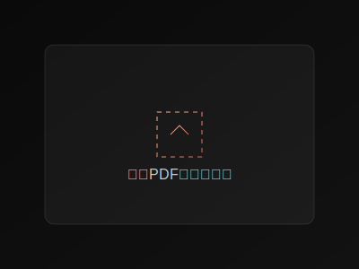

核心功能
智能PDF解析
- 自动识别论文结构
- 精准提取文本内容
- 智能检测图表信息
- 多语言支持
深度分析
- 研究方法评估
- 创新点识别
- 实验设计分析
- 结果可信度评估
评估报告
- 研究价值评估
- 方法论分析
- 未来方向建议
- 相关研究推荐
智能助手
- 论文解读辅助
- 重点内容提炼
- 疑难概念解释
- 研究思路启发
功能演示

便捷上传
支持拖放上传，批量处理，智能排队

智能分析
深入的论文分析，多维度评估报告

在线阅读
集成PDF阅读器，支持标注和笔记
关于项目
技术栈
- 🔧 Flask Web框架
- 📚 PyMuPDF解析引擎
- 🧠 自然语言处理
- 🤖 DeepSeek AI集成
- 💻 现代化前端界面
开发状态
PDF解析与文本提取
基础分析功能
深度学习模型优化
更多高级特性开发中